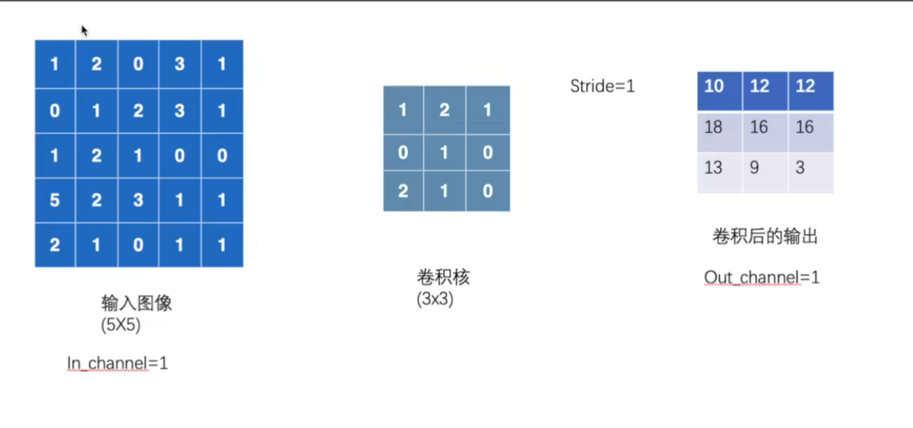
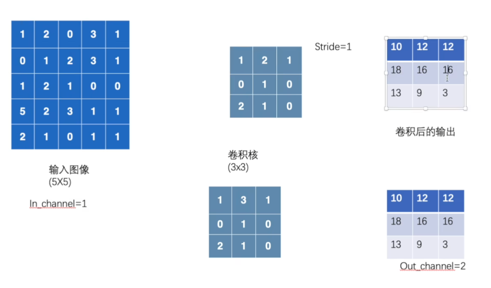

pytorch学习5
神经网络
卷积层
先扔一个pytorch的官网！https://pytorch.org/docs
继续：
这是参数：作为图像处理常用的是Conv2d
nn.Conv1d |
Applies a 1D convolution over an input signal composed of several input planes. |
|---|---|
nn.Conv2d |
Applies a 2D convolution over an input signal composed of several input planes. |
nn.Conv3d |
Applies a 3D convolution over an input signal composed of several input planes. |
nn.ConvTranspose1d |
Applies a 1D transposed convolution operator over an input image composed of several input planes. |
nn.ConvTranspose2d |
Applies a 2D transposed convolution operator over an input image composed of several input planes. |
nn.ConvTranspose3d |
Applies a 3D transposed convolution operator over an input image composed of several input planes. |
nn.LazyConv1d |
A torch.nn.Conv1d module with lazy initialization of the in_channels argument of the Conv1d that is inferred from the input.size(1). |
nn.LazyConv2d |
A torch.nn.Conv2d module with lazy initialization of the in_channels argument of the Conv2d that is inferred from the input.size(1). |
nn.LazyConv3d |
A torch.nn.Conv3d module with lazy initialization of the in_channels argument of the Conv3d that is inferred from the input.size(1). |
nn.LazyConvTranspose1d |
A torch.nn.ConvTranspose1d module with lazy initialization of the in_channels argument of the ConvTranspose1d that is inferred from the input.size(1). |
nn.LazyConvTranspose2d |
A torch.nn.ConvTranspose2d module with lazy initialization of the in_channels argument of the ConvTranspose2d that is inferred from the input.size(1). |
nn.LazyConvTranspose3d |
A torch.nn.ConvTranspose3d module with lazy initialization of the in_channels argument of the ConvTranspose3d that is inferred from the input.size(1). |
nn.Unfold |
Extracts sliding local blocks from a batched input tensor. |
nn.Fold |
Combines an array of sliding local blocks into a large containing tensor. |
点进去看看：
CLASS
torch.nn.Conv2d(in_channels, out_channels, kernel_size, stride=1, padding=0, dilation=1, groups=1, bias=True, padding_mode='zeros', device=None, dtype=None) Applies a 2D convolution over an input signal composed of several input planes.
In the simplest case, the output value of the layer with input size
and output
can be precisely described as:
where ⋆ is the valid 2D cross-correlation operator, N is a batch size, C denotes a number of channels, H is a height of input planes in pixels, and W* is width in pixels.
This module supports TensorFloat32.
On certain ROCm devices, when using float16 inputs this module will use different precision for backward.
stridecontrols the stride for the cross-correlation, a single number or a tuple.paddingcontrols the amount of padding applied to the input. It can be either a string {‘valid’, ‘same’} or an int / a tuple of ints giving the amount of implicit padding applied on both sides.dilationcontrols the spacing between the kernel points; also known as the à trous algorithm. It is harder to describe, but this link has a nice visualization of whatdilationdoes.groupscontrols the connections between inputs and outputs.in_channelsandout_channelsmust both be divisible bygroups. For example,- At groups=1, all inputs are convolved to all outputs.
- At groups=2, the operation becomes equivalent to having two conv layers side by side, each seeing half the input channels and producing half the output channels, and both subsequently concatenated.
- At groups=
in_channels, each input channel is convolved with its own set of filters (of size $\frac{in_channels}{out_channels}$)
The parameters kernel_size, stride, padding, dilation can either be:
- a single
int– in which case the same value is used for the height and width dimension- a
tupleof two ints – in which case, the first int is used for the height dimension, and the second int for the width dimension
When groups == in_channels and out_channels == K * in_channels, where K is a positive integer, this operation is also known as a “depthwise convolution”.
In other words, for an input of size $(N,C_{in},L_{in})$, a depthwise convolution with a depthwise multiplierK can be performed with the arguments ($C_{in}=C_{in},C_{out}=C_{in}×K,…,groups=C_{in}$.)
In some circumstances when given tensors on a CUDA device and using CuDNN, this operator may select a nondeterministic algorithm to increase performance. If this is undesirable, you can try to make the operation deterministic (potentially at a performance cost) by setting
torch.backends.cudnn.deterministic = True. See Reproducibility for more information.
padding='valid' is the same as no padding. padding='same' pads the input so the output has the shape as the input. However, this mode doesn’t support any stride values other than 1.
This module supports complex data types i.e. complex32, complex64, complex128.
Parameters:
- in_channels (int) – Number of channels in the input image
- out_channels (int) – Number of channels produced by the convolution
- kernel_size (int or tuple) – Size of the convolving kernel
- stride (int or tuple, optional) – Stride of the convolution. Default: 1
- padding (int, tuple or str, optional) – Padding added to all four sides of the input. Default: 0
- padding_mode (str, optional) –
'zeros','reflect','replicate'or'circular'. Default:'zeros' - dilation (int or tuple, optional) – Spacing between kernel elements. Default: 1
- groups (int, optional) – Number of blocked connections from input channels to output channels. Default: 1
- bias (bool, optional) – If
True, adds a learnable bias to the output. Default:True
what is Convolution arithmetic(from read ME)
A technical report on convolution arithmetic in the context of deep learning.
The code and the images of this tutorial are free to use as regulated by the
licence and subject to proper attribution:
- [1] Vincent Dumoulin, Francesco Visin - A guide to convolution arithmetic
for deep learning
(BibTeX)
Convolution animations
_N.B.: Blue maps are inputs, and cyan maps are outputs._
 |
 |
 |
 |
| No padding, no strides | Arbitrary padding, no strides | Half padding, no strides | Full padding, no strides |
 |
 |
 |
|
| No padding, strides | Padding, strides | Padding, strides (odd) |
Transposed convolution animations
_N.B.: Blue maps are inputs, and cyan maps are outputs._
| No padding, no strides, transposed | Arbitrary padding, no strides, transposed | Half padding, no strides, transposed | Full padding, no strides, transposed |
| No padding, strides, transposed | Padding, strides, transposed | Padding, strides, transposed (odd) |
Dilated convolution animations
_N.B.: Blue maps are inputs, and cyan maps are outputs._
 |
| No padding, no stride, dilation |
Generating the Makefile
From the repository’s root directory:
$ ./bin/generate_makefileGenerating the animations
From the repository’s root directory:
$ make all_animationsThe animations will be output to the gif directory. Individual animation steps
will be output in PDF format to the pdf directory and in PNG format to thepng directory.
Compiling the document
From the repository’s root directory:
$ make
其实就是这样，我们3 x 3的扫过图像，并且对之求和输出到新单元，我们发现他会做九次。，故得到了一个 3 x 3的表。

这样就可以升维了，从而提取信息特征。

import torch
import torchvision
from torch import nn
from torch.nn import Conv2d
from torch.utils.data import DataLoader
dataset = torchvision.datasets.CIFAR10("../data",train = False,
transform=torchvision.transforms.ToTensor(),
download=True
)
dataloader = DataLoader(dataset,batch_size=64)
class cc(nn.Module):
def __init__(self):
super(cc,self).__init__()
self.conv1 = Conv2d(in_channels=3,out_channels=6,kernel_size=3,stride=1,padding=0)
def forward(self,x):
x = self.conv1(x)
return x
c = cc()
for data in dataloader:
imgs, targets =data
output = c(imgs)
print(imgs.shape)
print(output.shape) 我们把它输出到tensorboard里去：
import torch
import torchvision
from torch import nn
from torch.nn import Conv2d
from torch.utils.data import DataLoader
from torch.utils.tensorboard import SummaryWriter
dataset = torchvision.datasets.CIFAR10("../data",train = False,
transform=torchvision.transforms.ToTensor(),
download=True
)
dataloader = DataLoader(dataset,batch_size=64)
class cc(nn.Module):
def __init__(self):
super(cc,self).__init__()
self.conv1 = Conv2d(in_channels=3,out_channels=6,kernel_size=3,stride=1,padding=0)
def forward(self,x):
x = self.conv1(x)
return x
c = cc()
writer = SummaryWriter("../logs")
step = 0
for data in dataloader:
imgs, targets =data
output = c(imgs)
print(imgs.shape)
print(output.shape)
output = torch.reshape(output, (-1, 3, 30, 30))
writer.add_images("input",imgs,step)
writer.add_images("output", output, step)
step = step + 1(yolofacev5) pythonProject1> cd ..
(yolofacev5) pythonProject1> tensorboard --logdir=logs